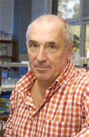
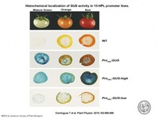
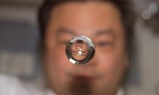
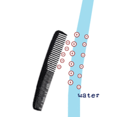
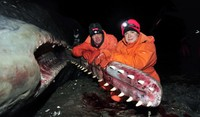
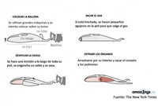
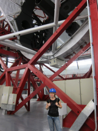
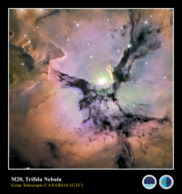
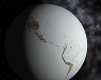
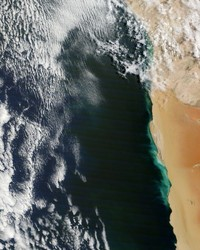

Dilemas de Biopeligrosidad
Wed, 15 Feb 2012 08:30:15 +0000
Hace diez años, Ian Ramshaw, investigador de la John Curtis School of Medicine, descolgó el teléfono a un hombre de avanzada edad que llamaba desde Londres. El anciano, que decía ser científico, le llamaba “para avisarle de que había vida después de la muerte y que los muertos utilizaban las palabras para contactar con nosotros”. [...]
Entradas relacionadas
-
Cazadores de virus
Por Amazings | 01/09/2011 @ 12:00 | Quo | 1 Comentario
-
De la vacuna al “supervirus”
Por Amazings | 06/12/2010 @ 15:47 | Enlace Recomendado | 3 Comentarios
-
Viroides: una reliquia viviente del mundo del ARN
Por Jose Miguel Mulet | 19/10/2011 @ 09:30 | Biología | 15 Comentarios

Ian Ramshaw | Imagen - Biosecurity.edu.au
Hace diez años, Ian Ramshaw, investigador de la John Curtis School of Medicine, descolgó el teléfono a un hombre de avanzada edad que llamaba desde Londres.
El anciano, que decía ser científico, le llamaba “para avisarle de que había vida después de la muerte y que los muertos utilizaban las palabras para contactar con nosotros”. Segundos después le colgó.
Ian Ramshaw no entendió nada. No todos los días un científico recibe una llamada así en un laboratorio; aunque en medio de una tormenta mediática todo es posible.
Meses antes, Ian Ramshaw y su colega Ron Jackson habían generado un “supervirus” y la publicación de sus resultados en una revista científica fue un todo un bombazo informativo1. Sobre todo tras aparecer en un sensacionalista artículo de Rachel Novak para NewScientist, que había puesto a los dos investigadores en el ojo del huracán.
En Australia, urgía desarrollar un mecanismo que esterilizara a conejos y ratones, culpables de una plaga con grandes repercusiones económicas. Ramshaw y Jackson, ambos investigadores en el campo de la inmunología y las vacunas, decidieron como aproximación al problema generar una vacuna esterilizante.
Su idea se basaba en modificar genéticamente el virus Ectromelia (que causa la “viruela del ratón”) para que produjera una proteína presente en las gónadas de los ratones. Si el sistema inmune reconocía dicha proteína en el contexto de una infección viral, aunque fuera propia, la destruiría. Es una buena forma de generar autoinmunidad. Y si eres autoinmune frente a tus gónadas te vuelves estéril. Una hipótesis más que prometedora.
Ensayaron su estrategia en ratones y funcionó, pero no era totalmente eficiente. Necesitaban que las respuestas inmunológicas fueran más potentes y decidieron añadir el gen de la IL-4, una molécula que potencia las respuestas de anticuerpos.
¿El resultado? Todos los animales murieron. Aunque todavía no entendían por qué sucedía esto, decidieron ver qué pasaba si se vacunaba primero a los animales frente al virus Ectromelia y luego se pinchaban con el nuevo virus. De nuevo, todos los animales murieron. Fue entonces cuando Ramshaw y Jackson se llevaron las manos a la cabeza; no sólo habían generado un virus letal, sino que era la primera evidencia de que un virus se saltaba la barrera de la vacunación2.
Después de los experimentos, de la tormenta mediática y de la extraña llamada, Ian se dio cuenta de su motivo.
Leyendo parte de un correo de trabajo, fijó su mirada en el nombre del virus que habían generado. La abreviación del virus usada en el artículo era (EV)-IL-4. EVIL. Maldad, en inglés. Y se acordó de la llamada, una pesada broma basada en su publicación, cuya repercusión fue tan grande que hasta aparece en el prólogo de la novela “Presa” de Michael Crichton.
Hace poco, me puse en contacto con Ian Ramshaw después de mucho tiempo. Era para escribir un artículo sobre la polémica del nuevo H5N1, la investigación que ni Nature ni Science quieren publicar y que se conocerá históricamente como el virus de Rotterdam.
Imagen coloreada del virus N5H1 mediante microscopio electrónico de transmisión
La controvertida investigación nace en los National Institutes of Health –NIH-, encargado de gran parte de Salud Pública de Estados Unidos, que quería investigar cómo de fácil era que el H5N1; el famoso y letal virus de la gripe aviar, se transmitiera entre humanos. Era una información altamente necesaria para prevenir una catástrofe de dimensiones dramáticas que no sabíamos cuán cerca estaba de ser posible.
Uno de los investigadores encargados de estudiar dicha posibilidad fue Ron Fouchier, investigador del Erasmus Medical Center en Rotterdam, Holanda; un reconocido experto internacional en gripe. Su misión era modificar el virus H5N1 mutando su genoma hasta conseguir que se transmitiera entre hurones, un modelo animal excelente para estudiar la transmisión entre humanos.
Tras trasladar todo el conocimiento sobre la transmisión de gripe en forma de mutaciones en sitios específicos, no consiguió que el virus se transmitiera; aunque el virus obtenido seguía siendo altamente letal.
Decidieron en dicho punto actuar a la inversa. Dejarían al virus evolucionar “forzadamente” en hurones, hasta que demostrara dicha capacidad. El experimento consistió en infectar a un hurón y poner a otro hurón en la jaula de al lado y ver si conseguía transmitirle la enfermedad sin tocarlo. Si no lo conseguía, una vez muerto el hurón, se extraían virus del mismo y se infectaba a otro hurón. Y así sucesivamente. ¿El resultado? No hizo falta hacerlo más de diez veces. El décimo hurón infectado consiguió contagiar mediante aerosoles –un estornudo, una tos, o simplemente al respirar- a su compañero de celda.
Primera duda resuelta, en condiciones forzadas estamos a “diez pases” de infectado a infectado. Pero ahora que se tenía el virus, se podía secuenciar su genoma y saber qué cambios genéticos eran necesarios. ¿El resultado? Tan sólo 5 mutaciones puntuales hacen que el H5N1 pase de ser sólo letal, a letal y altamente transmisible.
El grupo de Ron Fouchier envió la información para publicarse en Science y la revista frenó su publicación y avisó a la NSABB, el panel de control de bioseguridad de los Estados Unidos. La publicación quedó frenada. Meses después las revistas Science y Nature acordaron no publicar ninguna información que pudiera considerarse peligrosa sobre el H5N1. Actualmente, la polémica está servida. ¿Debe dicha información ser publicada, o es demasiado peligrosa para ser pública?
Tanto Ian Ramshaw –actual director de la comisión de bioseguridad australiana- como Juan Ortín – uno de los mejores expertos nacionales en el virus de la gripe- me dijeron que sí, pero que con trabas. Es interesante científicamente saber cómo de cerca estamos, 10 pases, 5 mutaciones; pero saber sus posiciones debería ser información reservada, porque si pueden ser la receta de un arma bioterrorista.
Existen incontables ejemplos de información que podría considerarse peligrosa por su potencial bioterrorista. Los genomas de polio y viruela están disponibles online y ya se ha demostrado que con dicha información se podría reconstruir el virus de la polio3. El caso de gripe es particularmente fácil, en cualquier laboratorio de biología molecular podrían introducirse las mutaciones. En cualquier laboratorio de biología molecular que tuviera acceso a un vial de H5N1, claro. Y medidas de bioseguridad para manipularlo, obvio pero no tan a mano.
Parece evidente que la información biopeligrosa tendría que estar restringida, pero a veces no lo parece tanto.
Los científicos hemos aprendido de accidentes de otros científicos para saber qué se puede y qué no se puede mezclar. Y decir que A+B explota no es únicamente información para hacer un arma. Debe constar en las etiquetas de A y B, para que a nadie le explote en la cara. Pero decir en alto que si juntas A y B puedes matar a alguien también es peligroso. ¿Qué hacemos entonces?
Por poner un ejemplo personal, actualmente trabajo en el desarrollo de vacunas modificando genéticamente el virus Vaccinia. El virus que causa la viruela vacuna y que se utilizó para erradicar la viruela, un homólogo del Ectromelia que utilizó Ramshaw, y nosotros, aunque con distinto fin, también necesitamos potenciar ciertas respuestas inmunológicas.
El otro día, en medio de un brainstorming sobre cómo mejorar uno de los candidatos, un joven investigador planteó en voz alta la posibilidad de añadir la IL-4 a uno de las cepas del virus vaccinia, porque había leído que la IL-4 era la mejor alternativa para su modelo de enfermedad. Diez años después de los experimentos de Jackson y Ramshaw, de su publicación y de la tormenta mediática; diez años sin producirse un mal uso con su información, pudimos decidir que dicha modificación no era en absoluto buena idea.
¿Qué hubiera sido más peligroso, publicar su trabajo o no hacerlo?
—————
Referencias:
Jackson R, & Ramshaw I (2010). The mousepox experience. An interview with Ronald Jackson and Ian Ramshaw on dual-use research. Interview by Michael J. Selgelid and Lorna Weir. EMBO reports, 11 (1), 18-24 PMID: 20010799
Jackson, R., Ramsay, A., Christensen, C., Beaton, S., Hall, D., & Ramshaw, I. (2001). Expression of Mouse Interleukin-4 by a Recombinant Ectromelia Virus Suppresses Cytolytic Lymphocyte Responses and Overcomes Genetic Resistance to Mousepox Journal of Virology, 75 (3), 1205-1210 DOI: 10.1128/JVI.75.3.1205-1210.2001
Cello, J. (2002). Chemical Synthesis of Poliovirus cDNA: Generation of Infectious Virus in the Absence of Natural Template Science, 297 (5583), 1016-1018 DOI: 10.1126/science.1072266
Entradas relacionadas
-
Cazadores de virus
Por Amazings | 01/09/2011 @ 12:00 | Quo | 1 Comentario
-
De la vacuna al “supervirus”
Por Amazings | 06/12/2010 @ 15:47 | Enlace Recomendado | 3 Comentarios
-
Viroides: una reliquia viviente del mundo del ARN
Por Jose Miguel Mulet | 19/10/2011 @ 09:30 | Biología | 15 Comentarios
Quo te regala una suscripción semestral…. si ganas un Premio Tesla
Mon, 13 Feb 2012 19:38:33 +0000
La revista Quo apostó por este blog desde antes incluso de que viera la luz. El año pasado su Comunity Manager Aurora Ferrer estuvo con nosotros en el evento Amazings Bilbao y escribió una magnífica crónica. En breve, colaboraremos además en la programación del evento Street Alicante Science. Por si no bastara, Quo se ha [...]
Entradas relacionadas
-
Os invitamos a “Amazings Bilbao 2011″, un evento de ciencia abierto a todos
Por Amazings | 26/07/2011 @ 09:30 | Amazings2011 | 30 Comentarios
-
El gigante está despertando
Por Irreductible | 15/01/2011 @ 09:34 | Astronomía, Fotografía | 3 Comentarios
-
Titan, en el objetivo de la estrella de la muerte
Por Irreductible | 08/08/2011 @ 15:34 | Astronomía, Fotografía | 6 Comentarios

Atracción de muerte | Crédito imagen: Quo
La revista Quo apostó por este blog desde antes incluso de que viera la luz. El año pasado su Comunity Manager Aurora Ferrer estuvo con nosotros en el evento Amazings Bilbao y escribió una magnífica crónica. En breve, colaboraremos además en la programación del evento Street Alicante Science.
Por si no bastara, Quo se ha ofrecido a incorporarse a la lista de patrocinadores del Premio Tesla, donde no solo aportará patrocinio y experiencia (estarán presentes en el jurado), sino que además obsequiará con una suscripción semestral a su revista a cada uno de los premiados. ¡Desde Amazings, nuevamente, nuestro agradecimiento!
Y tras las merecidas loas, os dejamos con una de esas curiosidades que “marean” encontradas en su web. Se trata de una montaña rusa ideada para matar a quienes suban a ella. Creemos que jamás llegará a construirse, a no ser que Goebbels y Menguele se reencarnen y fichen por algún Parque Warner. Semejante locura ha sido diseñada por Julijonas Urbonas, del Royal College of Art de Londres, que la ha bautizado con el acertado nombre de Euthanasia Coaster, ya que su objetivo es matar con “elegancia y euforia”.
Según su diseñador, la muerte se produce de “una forma muy elegante y entretenida”, por hipoxia (ausencia de oxígeno en el cerebro). La Euthanasia Coaster tiene una caída desde 500 metros de altura, seguida de siete frenéticos loopings (ver foto), que hacen que en menos de un minuto que dura el recorrido de la montaña rusa, la fuerza gravitatoria se multiplique sobre los ocupantes de tal manera, que su sangre se hace más pesada y se desplaza hacia las extremidades, dejando al cerebro sin riego.
Lee el resto de la entrada en Atracción de Muerte.
Entradas relacionadas
-
Os invitamos a “Amazings Bilbao 2011″, un evento de ciencia abierto a todos
Por Amazings | 26/07/2011 @ 09:30 | Amazings2011 | 30 Comentarios
-
El gigante está despertando
Por Irreductible | 15/01/2011 @ 09:34 | Astronomía, Fotografía | 3 Comentarios
-
Titan, en el objetivo de la estrella de la muerte
Por Irreductible | 08/08/2011 @ 15:34 | Astronomía, Fotografía | 6 Comentarios
Algunos tomates buenos (a few good tomatoes)
Mon, 13 Feb 2012 08:30:33 +0000
Uno de los caballos de batalla de los defensores de la alimentación ecológica es la de sus beneficios para la salud, beneficios que realmente no existen si tenemos en cuenta que la mayoría de las moléculas tóxicas o cancerígenas que ingerimos en la dieta son de origen natural (1). De hecho una revisión exhaustiva de [...]
Entradas relacionadas
-
En busca del tomate perdido
Por Jose Miguel Mulet | 28/12/2010 @ 09:30 | Curiosidades, Divulgación | 120 Comentarios
-
¿Cómo etiquetamos un tomate?
Por Jose Miguel Mulet | 15/12/2011 @ 09:30 | Biología, Divulgación | 67 Comentarios
-
El hombre que susurraba a los tomates
Por Irreductible | 30/07/2010 @ 12:00 | Escepticismo | 13 Comentarios
Uno de los caballos de batalla de los defensores de la alimentación ecológica es la de sus beneficios para la salud, beneficios que realmente no existen si tenemos en cuenta que la mayoría de las moléculas tóxicas o cancerígenas que ingerimos en la dieta son de origen natural (1).
De hecho una revisión exhaustiva de todo lo que se ha publicado sobre el tema en los últimos 50 años ha demostrado que no hay diferencias ni a nivel de contenido nutricional (2) ni a nivel de efectos sobre la salud (3) entre alimentación convencional y ecológica.
A pesar de esto, los entusiastas de la agricultura ecológica insisten además en que si es ecológico sabe mejor. Vaya por delante que si pagas por algo el triple de su precio habitual ya te preocupas tú de que esté más bueno y si no es el caso, te lo imaginas.
No hay demasiados estudios de doble ciego que comparen características organolépticas entre alimentos convencionales y ecológicos, y los pocos que hay dan que los resultados son similares ¿y que pasa con los transgénicos? ¿Pueden estar más buenos? Algunos si.
Vayamos a los tomates. La percepción tradicional es que los tomates del huerto del abuelo (que por cierto, no tenían nada de ecológicos) estaban mucho más buenos que los del súper. En la mayoría de los casos esto es cierto. Si dejas que el tomate madure en la mata desarrollará todo el sabor y aroma, pero se pondrá pocho en seguida. Los tomates de supermercado suelen madurarse en cámara, por eso están tan insípidos.
Dicho esto, el reglamento de producción ecológica también permite esta maduración en cámara, de hecho si vais en invierno a cualquier tienda de alimentos ecológicos los tomates que encontrareis estarán tan insípidos como los convencionales (y en verano puede que también).
¿Los tomates transgénicos están más buenos? No tiene por qué.
Que sea transgénicos solo quiere decir que expresa un gen de otro organismo (o que se ha modificado la expresión de un gen propio). El sabor depende de la combinación de centenares de moléculas, es decir, es un consecuencia de la riqueza química del tomate que, como en cualquier otro alimento, es complejísima. De hecho muchas variedades nuevas de tomate se han seleccionado por su sabor (si tengo que elegir me quedo con la RAF, pero eso si, regada con agua salobre que es la única forma que desarrolle todo el sabor). Si el gen que introduces no afecta a esta composición el tomate sabrá igual que uno convencional, por lo tanto cambiamos la pregunta.
¿Puede un tomate transgénicos estar más bueno que uno convencional?, pues sí, puede.
En el caso del tomate las moléculas más determinantes para el sabor final son los alcoholes y aldehidos (alcoholes oxidados) con 6 átomos de carbono. De hecho se ha demostrado que las variedades que más éxito tiene en el mercado por su sabor son las que tienen un mayor radio entre cis-(3)-hexenal y hexanal. (entre un aldehido con un doble enlace y el mismo aldehido). Bioquímicamente estos dos compuestos proceden de ácidos grasos, concretamente del ácido linolénico (18 átomos de carbono con 3 dobles enlaces, también llamados insaturaciones) y del ácido linoleico (18 carbonos 2 insaturaciones) respectivamente. Por lo tanto si tenemos más ácido linolénico tendremos mas cis (3) hexenal y el tomate estará más bueno.

Ensayo enzimático para comparar la expresión del transgen, cuanto más azul, más expresa el gen insertado
La ingeniería genética nos permite aumentar la expresión de un gen, llamado ω3 desaturasa, cuyo producto es capaz de añadir un doble enlace al ácido linoleico y trasnformarlo en linolénico. El grupo de Maite Sanmartín y J.J. Sánchez-Serrano en el centro nacional de biotecnología, en colaboración con el instituto de la grasa de Sevilla (CSIC) y de la Universidad de Ohio publicó en el 2010 sus resultados en tomates que sobreexpresan esta desaturasa y aumenta el contenido entre los aldehidos responsables del aroma, con una ventaja añadida, al alterar la fluidez de la membrana son más tolerantes a frío.
La lástima es que esos tomates difícilmente llegarán al mercado salvo que alguna empresa quiera invertir varios millones de euros en superar el casi imposible proceso de autorización de una nueva variedad transgénica. Alguien no puede encajar la verdad y ha ordenado un código rojo sobre los tomates transgénicos. Una pena porque seguro que están buenísimos.
——————-
Referencias:
Ames, B. (1990). Dietary Pesticides (99.99% All Natural) Proceedings of the National Academy of Sciences, 87 (19), 7777-7781 DOI: 10.1073/pnas.87.19.7777
Dangour, A., Dodhia, S., Hayter, A., Allen, E., Lock, K., & Uauy, R. (2009). Nutritional quality of organic foods: a systematic review American Journal of Clinical Nutrition, 90 (3), 680-685 DOI: 10.3945/ajcn.2009.28041
Dangour, A., Lock, K., Hayter, A., Aikenhead, A., Allen, E., & Uauy, R. (2010). Nutrition-related health effects of organic foods: a systematic review American Journal of Clinical Nutrition, 92 (1), 203-210 DOI: 10.3945/ajcn.2010.29269
Domínguez T, Hernández ML, Pennycooke JC, Jiménez P, Martínez-Rivas JM, Sanz C, Stockinger EJ, Sánchez-Serrano JJ, & Sanmartín M (2010). Increasing omega-3 desaturase expression in tomato results in altered aroma profile and enhanced resistance to cold stress. Plant physiology, 153 (2), 655-65 PMID: 20382895
Entradas relacionadas
-
En busca del tomate perdido
Por Jose Miguel Mulet | 28/12/2010 @ 09:30 | Curiosidades, Divulgación | 120 Comentarios
-
¿Cómo etiquetamos un tomate?
Por Jose Miguel Mulet | 15/12/2011 @ 09:30 | Biología, Divulgación | 67 Comentarios
-
El hombre que susurraba a los tomates
Por Irreductible | 30/07/2010 @ 12:00 | Escepticismo | 13 Comentarios
La gota que “orbita” la aguja en la ISS (explicación)
Sun, 12 Feb 2012 13:04:45 +0000
Hace unos días apareció por en internet un video con un interesante efecto de una gota “orbitando” una aguja desde la ISS. Dos de los físicos de Amazings se han animado a subtitularlo (Arturo Quirantes) y ofrecer una explicación del curioso efecto (Ivan García Cubero). A pesar de que las leyes de la física son [...]
Entradas relacionadas
-
Sal parece, pero no es… ¿qué es?
Por maikelnai | 26/08/2010 @ 22:16 | Ecología, Química | 25 Comentarios
-
Peripecias de una hormiguita al beber en una gota de agua (video)
Por Vicente Torres | 09/01/2012 @ 09:30 | Curiosidades, Física | 5 Comentarios
-
Peripecias de una hormiguita al beber en una gota de agua (video)
Por Vicente Torres | 04/01/2011 @ 09:30 | Curiosidades, Física | Sin comentarios
Hace unos días apareció por en internet un video con un interesante efecto de una gota “orbitando” una aguja desde la ISS. Dos de los físicos de Amazings se han animado a subtitularlo (Arturo Quirantes) y ofrecer una explicación del curioso efecto (Ivan García Cubero).
A pesar de que las leyes de la física son iguales en todos los puntos del espacio, el comportamiento de la materia no siempre sigue esta máxima. En el espacio, más precisamente en la Estación Espacial Internacional, al estar permanentemente en un estado de caída libre y por tanto de microgravedad o gravedad cero, aparecen comportamientos realmente llamativos. Uno ejemplo de esto es el agua.
La manera en que un líquido en la Tierra adquiere su mínima energía o equilibrio es adquiriendo la forma del recipiente que lo contiene. Sin embargo, en microgravedad el equilibrio es una forma esférica, como una supergota.

Astronauta Leroy Chiao. | Fuente de la imagen
Ahora bien, ¿recordáis el sencillo experimento que todos realizamos de pequeños de peinarnos y luego acercar el peine a un chorro de agua para ver cómo se curvaba atraído por el peine? ¿Qué pasaría si se hiciera algo así en el espacio?
A la NASA le encanta hacer este tipo de experimentos educativos en la Estación Espacial Internacional y no han dudado en ponerse manos a la obra con este experimento. Para ello han cogido agujas de tejer de diferentes materiales y tras frotarlas con un papel han dejado flotar a su lado pequeñas gotas de agua lanzándolas con una jeringuilla. ¿Os imagináis el resultado?
Pinche aquí para ver el vídeo
Sorprendente, ¿verdad? Las gotas de agua se comportan como si fueran satélites orbitando un planeta, dando vueltas alrededor de la aguja. Obviamente esto no tiene nada que ver con la gravedad ya que la interacción gravitatoria es tan débil que solo se nota cuando están involucradas grandes masas, sino que las causantes son las cargas eléctricas y la fuerza electrostática.
Por defecto todos los objetos y materiales en la naturaleza tienen carga eléctrica neta nula, es decir son neutros: tienen el mismo número de electrones que de protones. Sin embargo, cuando el astronauta Don Pettit frota la aguja se transfieren unos pocos electrones desde el papel, de modo que la aguja queda con una carga eléctrica neta negativa. Que se transfieran más o menos electrones depende de la afinidad electrónica de los materiales involucrados. En este caso el papel tiene mayor facilidad para perder los electrones que la aguja.
Las gotas de agua tienen carga eléctrica neutra, pero la molécula de H2O tiene una propiedad especial: es una molécula polar. Esto quiere decir que al aplicar un campo eléctrico sus hidrógenos (carga positiva) y su oxígeno (carga negativa) se separan siguiendo la orientación del campo. Este fenómeno se conoce como polarización.
En nuestro caso, la aguja actúa como fuente de campo eléctrico causado por el extra de cargas negativas, y hace que el agua se polarice. Es decir, sus átomos de hidrógeno comienzan a sentir la fuerte atracción electrostática de la aguja y se acercan a la misma, mientras que sus átomos de oxígeno se tratan de alejar. Podría parecer que debido a esta lucha de cargas las gotas de agua no deberían moverse, pero la atracción electrostática es lo suficientemente fuerte como para hacer que la fuerza neta sea atractiva y podamos ver sus efectos.

Esquema básicodel movimiento de cargas en el experimento hecho en la Tierra.
Si a esto le añadimos la simetría cilíndrica del peine el resultado final es ese movimiento orbital en espiral tan llamativo. Si os fijáis, la velocidad de las gotas es mayor si están cerca de la aguja y disminuye a medida que se alejan. La analogía con la gravitación es clarísima, pues ambas interacciones dependen del inverso de la distancia al cuadrado.
Como comentario final, me gustaría resaltar una de las cosas que dice Don Pettit y que hace que la física sea un poco más bonita, si cabe. Se trata de la analogía de lo que vemos en el vídeo con con el movimiento de cargas en nuestro campo magnético terrestre. Por sorprendente que pueda parecer que un experimento electrostático así de sencillo pueda parecerse a algo tan llamativo como una aurora, lo cierto es que es verdad. En ese caso el magnetismo es el causantedel movimiento, pero las cargas eléctricas que nos llegan desde el Sol realizan un baile similar siguiendo las líneas de campo magnético terrestre hasta alcanzar los polos. Allí al chocar con las moléculas de oxígeno y nitrógeno de la atmósfera dan lugar a esos preciosos colores que vemos en las auroras.
Un punto más para la magia de la física.
—————-
Más información:
- Physics Central – Science off theSphere
- Physics Central – Physics in theSink: DancingWater
Entradas relacionadas
-
Sal parece, pero no es… ¿qué es?
Por maikelnai | 26/08/2010 @ 22:16 | Ecología, Química | 25 Comentarios
-
Peripecias de una hormiguita al beber en una gota de agua (video)
Por Vicente Torres | 09/01/2012 @ 09:30 | Curiosidades, Física | 5 Comentarios
-
Peripecias de una hormiguita al beber en una gota de agua (video)
Por Vicente Torres | 04/01/2011 @ 09:30 | Curiosidades, Física | Sin comentarios
Amazings en Ràdio Barcelona (semana 61)
Fri, 10 Feb 2012 12:03:46 +0000
Ya podéis escuchar la última entrega de nuestra sección en el programa “Què feu que no dormiu?”, de cadena SER, Ràdio Barcelona, que se emite en la madrugada del sábado. Descarga en MP3: 5,5 Megas Entradas relacionadas Amazings en Ràdio Barcelona (semana 59) Por Amazings | 18/01/2012 @ 09:17 | Radio Barcelona | 2 Comentarios [...]
Entradas relacionadas
-
Amazings en Ràdio Barcelona (semana 59)
Por Amazings | 18/01/2012 @ 09:17 | Radio Barcelona | 2 Comentarios
-
Amazings en Ràdio Barcelona (semana 60)
Por Amazings | 31/01/2012 @ 20:03 | Radio Barcelona | Sin comentarios
-
Amazings en Ràdio Barcelona (semana 12)
Por Amazings | 01/12/2010 @ 12:48 | Radio Barcelona | 1 Comentario
Ya podéis escuchar la última entrega de nuestra sección en el programa “Què feu que no dormiu?”, de cadena SER, Ràdio Barcelona, que se emite en la madrugada del sábado.
Descarga en MP3: 5,5 Megas
Entradas relacionadas
-
Amazings en Ràdio Barcelona (semana 59)
Por Amazings | 18/01/2012 @ 09:17 | Radio Barcelona | 2 Comentarios
-
Amazings en Ràdio Barcelona (semana 60)
Por Amazings | 31/01/2012 @ 20:03 | Radio Barcelona | Sin comentarios
-
Amazings en Ràdio Barcelona (semana 12)
Por Amazings | 01/12/2010 @ 12:48 | Radio Barcelona | 1 Comentario
Conspiraciones incompatibles… no hay problema
Thu, 09 Feb 2012 11:31:00 +0000
Sobre todo en internet, pero también en otros medios, estamos inundados de teorías conspirativas que anuncian desde el fin del mundo hasta la llegada y contacto de seres extraterrestres, pasando por astrologías varias, medicinas alternativas y un largo (largo largo) etcétera de pseudociencias. Y todas con sus acérrimos seguidores. Creyentes en lo irracional a los [...]
Entradas relacionadas
-
Cómo convertir a un escéptico en creyente
Por aberron | 21/07/2011 @ 15:12 | Escepticismo | 19 Comentarios
-
Malaspina vuelve a casa
Por Puratura | 14/07/2011 @ 12:35 | Divulgación, Ecología | 4 Comentarios
-
Los creacionistas no quedan tan lejos
Por Amazings | 23/05/2011 @ 23:22 | Escepticismo | 25 Comentarios

Sobre todo en internet, pero también en otros medios, estamos inundados de teorías conspirativas que anuncian desde el fin del mundo hasta la llegada y contacto de seres extraterrestres, pasando por astrologías varias, medicinas alternativas y un largo (largo largo) etcétera de pseudociencias. Y todas con sus acérrimos seguidores. Creyentes en lo irracional a los que poco o nada les importa la falta de evidencias o directamente el carro de pruebas en su contra.
Un primer acercamiento nos indica claramente que tenemos un problema: vivimos en una sociedad constantemente bombardeada por información y una gran parte de esa sociedad no utiliza criterios válidos para procesarla.
No es un problema nuevo, hace 4 siglos Francis Bacon, uno de los padres del método científico ya afirmaba:
Una vez que ha adoptado una opinión (tanto si se trata de una opinión recibida, bien si se trata de una opinión conforme con él), el entendimiento humano hace que todas las demás cosas le apoyen y concuerden con ella. Y aunque en contra haya un mayor número de ejemplos y sean de mayor peso, los olvida o los desprecia, o también, estableciendo alguna distinción, los desecha y los niega; con el fin de que, por esta gran y perniciosa predeterminación, la autoridad de sus antiguas conclusiones pueda permanecer inviolada (…)
Y es así como funcionan todas las supersticiones, ya se trate de astrología, los sueños, los augurios, los juicios divinos, o cosas de este tipo en las que los hombres, deleitándose en tales vanidades, realzan los acontecimientos que se cumplen, y desatienden y olvidan, pese a que esto ocurra con mayor frecuencia, aquellos donde fallan.
Cita del libro ¿Por qué creemos cosas raras? de Michael Shermer
Lo que sí es nuevo es el estudio sobre creencias irracionales y conspiranoicas realizado por investigadores de la Universidad de Kent y publicado hace unos días en el Social Psychological and Personality Science (SPPS). Los resultados son sorprendentes.
Los investigadores querían saber si el creyente en una conspiración era capaz de creer en otras teorías conspirativas sobre el mismo hecho. Y lo que han comprobado es que no solo pueden aceptar teorías conspiranoicas diferentes sobre el mismo tema sino incluso incompatibles.
Para su investigación han realizado dos estudios diferentes para los que eligieron dos temas controvertidos: Por un lado el accidente que costó la vida a Lady Di y por otro la captura y muerte de Osama Bin Laden.
Respecto a la muerte de la princesa de Gales, los sujetos de estudio (n=137) ofrecieron numerosas teorías entre las que destacan:
- Que fue asesinada por los servicios de inteligencia británicos.
- Que fue asesinada por los enemigos de los negocios del padre de Dodi Al-Fayed
- Que fingió su propia muerte para huir de la presión de la prensa
Los resultados del estudio mostraron que aquellos que creían con más fuerza en que Lady Di fue asesinada por el servicio secreto británico estaban más dispuestos a creer en las otras dos teorías e incluso no tenían problemas para creer en la teoría de que su muerte fue falsa para escapar de los paparazzi.
Es decir, los participantes que con más determinación creían en la conspiración y asesinato por parte de los servicios británicos también eran los más dispuestos a creer que Lady Di está viva y fingió su propia muerte.
El segundo estudio, realizado con 102 participantes, las teorías que se barajaron fueron también muy variopintas aunque destacaban principalmente dos:
- Bin Laden estaba muerto mucho antes de la redada de los marines.
- Bin Laden no está muerto y sigue con vida escondido en algún rincón del mundo.
Al igual que en el estudio número 1 con Lady Di los participantes que con más determinación creían en alguna teoría también eran los más propensos a creer en la otra, sin importarles que las dos conspiraciones fueran incompatibles entre ellas.
Es decir, aquellos que creían con más firmeza que Bin Laden ya estaba muerto, también estaban dispuestos a afirmar que sigue vivo y coleando por algún lugar del mundo.
Al parecer esto de creer en las conspiraciones es como lo de aquellas famosas patatas que, cuando empiezas, ya no hay stop…
Decía Phil Plaitt que no puedes razonar con una persona que no está usando la razón y es muy probable que estuviera en lo cierto. Desde el pensamiento crítico no es fácil llegar a alguien que posee creencias irracionales precisamente porque ha desechado ese mismo criterio lógico. Es una de esas pescadillas que se muerden la cola: la razón de poco sirve para quien cree por encima de ella.
——————-
Referencia:
Wood, M., Douglas, K., & Sutton, R. (2012). Dead and Alive: Beliefs in Contradictory Conspiracy Theories Social Psychological and Personality Science DOI: 10.1177/1948550611434786
Entradas relacionadas
-
Cómo convertir a un escéptico en creyente
Por aberron | 21/07/2011 @ 15:12 | Escepticismo | 19 Comentarios
-
Malaspina vuelve a casa
Por Puratura | 14/07/2011 @ 12:35 | Divulgación, Ecología | 4 Comentarios
-
Los creacionistas no quedan tan lejos
Por Amazings | 23/05/2011 @ 23:22 | Escepticismo | 25 Comentarios
Cómo diseccionar una ballena
Wed, 08 Feb 2012 19:00:20 +0000
En enero de 2009 la anatomista Joy Reidenberg tuvo una de las experiencias más surrealistas de su vida. Volaba desde Dublín a Nueva York y su piel apestaba. Para disimular un poco, aseguró que se encontraba indispuesta y la tripulación del avión la movió a un sitio cerca del lavabo. El olor era tan fuerte [...]
Entradas relacionadas
-
Nabokov acertó con las mariposas azules
Por aberron | 28/01/2011 @ 23:21 | Biología | 4 Comentarios
-
Uh, baby, ¡me pones eléctrico!
Por aberron | 28/07/2010 @ 19:43 | Biología | 7 Comentarios
-
Salvar la vida con un trasplante de bacterias
Por aberron | 13/07/2010 @ 22:27 | Biología | 15 Comentarios
En enero de 2009 la anatomista Joy Reidenberg tuvo una de las experiencias más surrealistas de su vida. Volaba desde Dublín a Nueva York y su piel apestaba. Para disimular un poco, aseguró que se encontraba indispuesta y la tripulación del avión la movió a un sitio cerca del lavabo. El olor era tan fuerte que tuvieron que decir al resto del pasaje que el baño se había estropeado. Y lo mejor es que la pobre doctora Reidenberg no podía explicar la razón real: el día anterior había estado en el interior de una ballena.
De esta forma introduce Carl Zimmer a la protagonista de su reportaje para The New York Times, la anatomista que protagonizó la serie de televisión “Inside Nature’s Giants” (Dentro de los gigantes de la naturaleza), en la que diseccionan todo tipo de animales para mostrarnos su anatomía. Para el programa, en el que participa Richard Dawkins, han diseccionado jirafas, elefantes, osos polares y tiburones, guiados siempre por la mano de esta anatomista.
La disección del cachalote que aparece en el programa la realizó en la misma playa irlandesa en la que apareció varado y el primer paso fue sacarle el gas. “Se estaba inflando como el Hindenburg”, asegura, “era como desactivar una bomba”. Después retiro la grasa y se introdujo en busca de sus órganos. El proceso debe ser muy rápido, ya que solo tienen unas horas para culminarlo. En The New York Times han hecho un gráfico muy ilustrativo que os resumo aquí:

Si queréis conocer más detalles del proceso, podéis verlos en los vídeos del programa que hay subidos a la red. Y en la fantástica crónica de Carl Zimmer.
Enlace: From Inside Lions and Leviathans, Anatomist Builds a Following (The New York Times)
Entradas relacionadas
-
Nabokov acertó con las mariposas azules
Por aberron | 28/01/2011 @ 23:21 | Biología | 4 Comentarios
-
Uh, baby, ¡me pones eléctrico!
Por aberron | 28/07/2010 @ 19:43 | Biología | 7 Comentarios
-
Salvar la vida con un trasplante de bacterias
Por aberron | 13/07/2010 @ 22:27 | Biología | 15 Comentarios
¿Para qué construir el mejor telescopio del mundo y luego dejarlo estancado? Entrevista sobre la situación del GTC
Wed, 08 Feb 2012 10:35:53 +0000
Los recortes en ciencia están empezando a dejar mella en los centros de investigación y los estudiantes de carreras científicas en España miran su futuro con preocupación. Se dice que la ciencia en España tiene tres salidas: por tierra, por mar y por aire. Pero existe otra salida: por el espacio. Hoy traemos aquí la [...]
Entradas relacionadas
-
12 enigmas para este verano
Por Amazings | 19/07/2011 @ 19:25 | Quo | 7 Comentarios
-
Guía para no meter la pata sobre la crisis nuclear de Japón
Por Amazings | 14/03/2011 @ 21:16 | Divulgación, Enlace Recomendado | 25 Comentarios
-
Diez pasos para buscar vida fuera de la Tierra
Por Amazings | 25/10/2010 @ 13:28 | Quo | 4 Comentarios
Los recortes en ciencia están empezando a dejar mella en los centros de investigación y los estudiantes de carreras científicas en España miran su futuro con preocupación. Se dice que la ciencia en España tiene tres salidas: por tierra, por mar y por aire. Pero existe otra salida: por el espacio. Hoy traemos aquí la entrevista a una experta en difusión de la ciencia. Se llama Natalia Ruiz Zelmanovitch y así se define ella misma:
“Empecé a hacer divulgación de la ciencia en el Instituto de Astrofísica de Canarias (IAC) en el año 2001, siendo la encargada de las tareas de divulgación en torno al Gran Telescopio CANARIAS (GTC). Durante siete años formé parte de esa gran familia, a la que he seguido unida desde el 2008 desde un programa del antiguo MICINN, un Consolider que dura 5 años y al que llamamos de forma abreviada Consolider-GTC. En este proyecto colaboran 170 astrónomos, la mayoría de instituciones españolas, aunque también contamos con astrofísicos de Estados Unidos y México. Ahora trabajo desde la UCC (Unidad de Cultura Científica) del Centro de Astrobiología (CSIC-INTA), en Madrid.”

Natalia Ruiz Zelmanovitch
AMAZINGS: Me suena eso de “Gran Telescopio CANARIAS”, ¿qué es?, ¿sirve para algo?
NATALIA: ¡Pues a mí también me suena!  Para mí el GTC es mucho más que un telescopio. Es un símbolo de empeño, con un esfuerzo humano detrás que probablemente en España no haya tenido precedentes. Entre bambalinas, junto a sus ingenieros, astrofísicos, jefes y empleados, he vivido momentos muy difíciles y, a la vez, muy hermosos. El año 2009 marcó el verdadero inicio del camino del GTC, que ahora cuenta con dos instrumentos científicos, OSIRIS, que trabaja en el rango visible (el rango de la luz que puede captar el ojo humano), y CanariCam, que trabaja en el rango infrarrojo. Aunque antes hubo otro camino, el de su construcción, que también ha dejado numerosas historias marcadas a fuego.
Para mí el GTC es mucho más que un telescopio. Es un símbolo de empeño, con un esfuerzo humano detrás que probablemente en España no haya tenido precedentes. Entre bambalinas, junto a sus ingenieros, astrofísicos, jefes y empleados, he vivido momentos muy difíciles y, a la vez, muy hermosos. El año 2009 marcó el verdadero inicio del camino del GTC, que ahora cuenta con dos instrumentos científicos, OSIRIS, que trabaja en el rango visible (el rango de la luz que puede captar el ojo humano), y CanariCam, que trabaja en el rango infrarrojo. Aunque antes hubo otro camino, el de su construcción, que también ha dejado numerosas historias marcadas a fuego.
¿Que para qué sirve? Pues tiene muchas finalidades, no te creas. Primero, abrir la espita a la avidez de nuestros astrofísicos, cuyo número y calidad se ha multiplicado como en ningún otro campo y como en pocos países del mundo, gracias, principalmente, a los cielos de Canarias. Contar con los observatorios de La Palma y Tenerife despertó numerosas vocaciones científicas (¿no es eso de lo que tanto hablamos en los círculos de divulgación científica?). Fue tanta la pasión que despertaron, que la ciencia se multiplicó. Pero los astrónomos españoles no tenían herramientas propias: investigaban con el tiempo que los telescopios extranjeros, instalados en suelo español, cedían a cambio de ubicarse allí. Y empezó a ser poco. Así que Francisco Sánchez, director del IAC, propuso la construcción de un instrumento que fuera nuestro para que a los astrofísicos españoles no les faltara el tiempo de observación. Hubo controversias, ya que se decía que España no tenía experiencia, que era mejor invertir en nuestro acceso al Observatorio Europeo Austral (ESO) y que no iba a salir bien.
Mira, si algo he aprendido en todos estos años es a buscar el equilibrio. Sé que a veces hay que elegir. Pero, ¿por qué no entrar a formar parte de ESO para acceder al hemisferio Sur del cielo y tener otro telescopio de primera en el hemisferio Norte? Si te digo que el GTC ha costado unos 140 millones de euros puede parecerte mucho. Pero es una cifra ridícula comparada con otras inversiones y, lo que es más, comparada con lo que hemos ganado a cambio.
Porque el GTC también ha servido para aprender a desarrollar tecnología y ponerla al servicio de la ciencia y, por ende, de la sociedad. Con la experiencia adquirida las instituciones y empresas españolas han aprendido tanto que ahora entran en lid y ganan contratos para otros grandes telescopios y nueva instrumentación científica (¿no es esto por lo que se lucha desde los gobiernos, por el desarrollo tecnológico e industrial desde las empresas?).
Y, por último, creo que nos ha servido para creérnoslo. De ser un agujero en el suelo ha pasado a ser una realidad palpable. Con sus más y sus menos, sus piedras lanzadas por nosotros mismos a nuestro propio tejado (muy propio de nuestra cultura) y sus temas controvertidos, cómo no. Pero ahí está, imponente y magnífico (subí hace poco al observatorio del Roque de Los Muchachos a verlo), con su equipo de gente trabajando denodadamente por sacarlo adelante. Y estoy convencida de que nos va a dar muchas y buenas sorpresas. Tiempo al tiempo.
AMAZINGS: Se escucha por ahí que la situación es dramática en el Instituto Astrofísico de Canarias, ¿por qué?
NATALIA: Probablemente no sea el IAC el que pase por la situación más difícil. Pese a que ha visto recortados sus presupuestos (y eso impide que fluya nuevo personal, lo cual ciertamente es muy preocupante), se trata de un centro de excelencia que acaba de recibir un Severo Ochoa (un millón de euros al año durante cuatro años). No digo que no estén sufriendo los recortes, pero si hablamos de situación dramática en extremo, creo que esa la está viviendo el propio telescopio… en concreto la empresa pública, GRANTECAN S.A., que fue creada con el fin de gestionar la construcción, puesta a punto y, ahora, el mantenimiento y nuevos desarrollos del GTC.
Hay que tener en cuenta que, un telescopio, por sí solo, no es suficiente: necesita instrumentación puntera, y lo que hoy diseñamos es lo que nos acercará a las respuestas que cuelgan de nuestros cielos dentro de diez o veinte años. Si nos paramos ahora nos quedamos sin instrumentación, el tren se irá sin nosotros y perderemos la oportunidad. Por tanto, el drama surge cuando se ven peligrar las inversiones futuras.
GRANTECAN S.A. es una empresa participada por el gobierno central y el gobierno canario al 50%. Desde el inicio de las operaciones, en 2009, no se ha cerrado todavía un acuerdo de financiación entre las partes. Las elecciones autonómicas primero, las nacionales después, y la posterior creación del Ministerio del cual dependerá ahora la Ciencia, han retrasado aún más una solución final. En realidad no se ha tratado de recortes propiamente dichos, sino de que las negociaciones aún no han concluido.
Ahora bien. Supongamos que hay acuerdo (que es lo más lógico). Por un lado, una de las posibilidades sería que se financiara sólo el mantenimiento y la empresa se quedase sin dinero para nuevos desarrollos: podríamos hacer ciencia de vanguardia durante unos años, pero luego nos quedaríamos anticuados en un plazo muy corto, y ¿para qué construir el mejor telescopio del mundo si luego no lo dotas de tecnología puntera? Es como querer que una cámara digital funcione con un carrete…
Si, por otro lado, toda la financiación del GTC se cortara… entonces no es drama, es locura. No quiero ni pensarlo. ¿Cerrar el GTC? Sería la muerte (y no la de “El sentido de la vida” de los Monty Phyton, sería como un mazazo moral, la puntilla, el fin, la debacle…). En fin, supongo que pensarán lo mismo los despedidos del Centro de Investigación Príncipe Felipe de Valencia, y con toda la razón. ¿Pero qué tipo de mentalidad se esconde tras estas decisiones? Eso es lo que realmente asusta.
AMAZINGS: “No se puede tener un bólido y gastar como un 600”. ¿A qué viene esta frase?
NATALIA: Esta frase de Francisco Sánchez [Director del IAC] viene a expresar lo poquito que nos gastamos en el GTC si lo comparamos con otros telescopios. El primero de los telescopios Keck, en Hawai (el primero que desarrolló la tecnología de espejo primario segmentado) se terminó de construir en 1992 y costó unos 101 M$; el segundo, inaugurado en 1996, costó unos 81 M$; tienen un presupuesto anual de entre 11 y 12 M$, con 125 personas empleadas, y nueve instrumentos científicos con un coste que ronda los 50 M$. Ahí es ná.
Los VLT de ESO (cuatro telescopios de 8 metros de diámetro cada uno) costaron 330 M€, y tienen un presupuesto anual de unos 17 M€… SIN CONTAR EL PERSONAL… lo cual imagino que se debe a que lo gastan en mantenimiento, optimización y desarrollo de nuevos instrumentos (cuentan con cuatro instrumentos y otros cuatro están en marcha).
El GTC se diferencia de los VLT en que tienen más capacidad colectora de luz (su espejo primario es mayor); y de los Keck en que, aprendiendo de ellos, ha mejorado su diseño en varios aspectos (y además, seguimos teniendo más capacidad colectora de luz, el GTC tiene 10,4 m de diámetro y los Keck 10 m). El GTC cuenta ahora mismo con dos instrumentos, hay dos más en construcción (los de segunda generación) y otros dos que se espera salgan adelante (estos serían los que entrarían en fase “drama” si no se llega a un acuerdo).
Al margen de los costes de construcción, están los costes de mantenimiento y nuevos desarrollos que hemos comentado: el GTC ha venido gastando, desde su puesta en marcha en 2009, unos 8 millones de euros al año (tal vez menos), pero es que dentro de esos 8 millones se cuenta todo: personal, nuevos desarrollos en instrumentación, mantenimiento…

AMAZINGS: ¿Por qué un país debe invertir en investigación científica?
NATALIA: Es una pregunta que odio que me hagan (lo siento). Es como preguntar si queremos respirar o preferimos morir asfixiados al tiempo que nos sonríen y nos aprietan el cuello… Mira, para mí la ciencia es la mejor herramienta para crear pensamiento crítico. La investigación en sí misma es una parte de la cultura científica (y no científica) de un país. La CULTURA en general (en la que yo no hago distinciones) debe incluirlo todo. Y aprender a discernir por nosotros mismos, a través del aprendizaje del método científico, nos haría sin duda más libres y más capaces. Si nos vamos a otros debates, también gano: al margen de crisis, agujeros negros (que los hay aquí mismo) y gañanes, un país no puede dejar que su mayor bien, sus mentes, sus creadores, sus deportistas, sus científicos… (y mira que yo no soy especialmente territorial) no solo se marchen, que eso es bueno para abrir horizontes, sino que no vuelvan a retroalimentar el sistema cultural. Les formamos, les enseñamos que esto es bueno, y luego nos damos la vuelta y silbamos distraídamente. No me tires de la lengua… Invertir en investigación (como en educación) es invertir en bienestar, invertir en las personas, invertir en futuro. Si eso no es suficiente, no sé qué lo será.
AMAZINGS: ¿Qué pasará con España si seguimos en esta línea de presupuesto CERO para la contratación de nuevos investigadores?
NATALIA: Ufff… “¿Qué pasará con España?, dices mientras clavas en mi pupila tu pupila azul. ¡Qué pasará con España! ¿Y tú me lo preguntas? España eres tú”. Y ahora fuera de broma: Tú eres profe [se dirige a Eugenio, en entrevistador], y ves cada día por dónde están yendo los tiros. ¿Con qué cara le dices tú ahora a tus alumnos que se dediquen a la Ciencia? Ese es el mensaje que les está llegando. Eso, por un lado.
Por otro están los que, con edades comprendidas entre 25 y 40 años, se plantean dejarlo. En serio, desde que empezaron los recortes he conocido a gente que, directamente, lo ha dejado (con toda la pena de su corazón) y he escrito sobre ello. Eso fue hace unos años. Ahora no lo dejan, los echan. No hay opciones: se acaban los contratos y se van a la calle. Yo no sé qué va a pasar. Pero sí sé lo que no va a pasar.
Con respecto al GTC, creo que debemos esperar a ver qué pasa. En cuanto a lo de “cero plazas”, voy a hacerte una metáfora que espero sea esperanzadora: cuando el agua corre, todo un enorme ciclo de vida fluye a gran escala. Cuando se estanca, el ciclo es más pequeñito. La vida continúa de otra manera. Lo malo es que el agua se evapore. Ahí sí que la hemos fastidiado.
————————–
Noticias relacionadas en otros medios:
El Gran Telescopio Canarias precisa de 9 millones para no cerrar. | http://ecodiario.eleconomista.es/ciencia/noticias/3727677/02/12/el-gran-telescopio-canarias-precisa-de-9-millones-para-no-cerrar.html
El Gran Telescopio de Canarias, ¿otra víctima de los recortes? | http://www.cadenaser.com/sociedad/articulo/gran-telescopio-canarias-victima-recortes/csrcsrpor/20120206csrcsrsoc_19/Tes
El Gran Telescopio de Canarias: ‘un Fórmula 1 con el presupuesto de un 600′ | http://www.elmundo.es/elmundo/2012/02/06/ciencia/1328531424.html?cid=GNEW970103
La ciencia española “tardará años en recuperarse de la sangría” | http://www.abc.es/20120206/ciencia/abci-ciencia-espanola-tardara-anos-201202061202.html
Estimating the costs of extremely large telescopes, Larry Steppa, Larry Daggertb Paul Gilletta, AURA New Initiatives Office, Tucson, Arizona 68519. National Optical Astronomy Observatory, Tucson, Arizona 68519: http://www.gsmt.noao.edu/documentation/SPIE_Papers/Stepp.pdf
Calculation of Time on Keck: http://ast.noao.edu/system/tsip/more-info/time-calc-keck
Entradas relacionadas
-
12 enigmas para este verano
Por Amazings | 19/07/2011 @ 19:25 | Quo | 7 Comentarios
-
Guía para no meter la pata sobre la crisis nuclear de Japón
Por Amazings | 14/03/2011 @ 21:16 | Divulgación, Enlace Recomendado | 25 Comentarios
-
Diez pasos para buscar vida fuera de la Tierra
Por Amazings | 25/10/2010 @ 13:28 | Quo | 4 Comentarios
Una para ti, otra mí
Tue, 14 Feb 2012 08:30:51 +0000
“Donde fueres haz lo que vieres” esa decía mi abuela que era la clave para adaptarse a cualquier situación. No sé si aquello sería demasiado, pero lo que sí parece es que al menos inconscientemente ya lo hacemos cuando comemos con otros y que este hecho puede afectar hasta nuestra dieta. Así que si te [...]
Entradas relacionadas
-
Esto son pasos de cebra y no los de mi barrio
Por maikelnai | 18/05/2011 @ 18:21 | Humor | 5 Comentarios
-
Una razón tan estúpida como otra cualquiera (o no) para creer en la teoría de cuerdas y otras dimensiones del más acá
Por Ondasolitaria | 01/03/2011 @ 09:30 | Física | 71 Comentarios
-
Fisión nuclear para dummies
Por maikelnai | 04/05/2011 @ 20:21 | Vídeos | 14 Comentarios
“Donde fueres haz lo que vieres” esa decía mi abuela que era la clave para adaptarse a cualquier situación. No sé si aquello sería demasiado, pero lo que sí parece es que al menos inconscientemente ya lo hacemos cuando comemos con otros y que este hecho puede afectar hasta nuestra dieta.
Así que si te interesa estar divin@ este verano sigue leyendo…
Siguiendo con los refranes, también se dice que “todo se pega,….”. Esto, en términos científicos, se llama imitación de comportamiento. Y va mucho más allá del típico efecto del bostezo, que se pega sin querer.
Hay multitud de grupos de investigación dedicados a intentar entender hasta qué punto nos influencia el comportamiento de los demás, desde las redes sociales (más aquí), a lo que bebemos (por ejemplo, un estudio encontró más probable que dos personas bebieran a continuación una de otra cuando eran del mismo sexo, que cada una lo hiciera a su ritmo) o lo que comemos.
En un trabajo publicado recientemente en la revista PLoSOne, un grupo de investigadores holandeses observó cómo comían un par de mujeres para determinar hasta qué punto se influenciaban una a la otra. Una de ellas había de comer un plato de una cantidad determinada, mientras la otra no tenía límite.
Lo que observaron fue que especialmente durante los primeros 10 minutos de la comida, la probabilidad de que pegaran un bocado a la par era más alta que la de que fueran desincronizadas y la cantidad total de comida que consumían también era bastante similar.
¿Cómo lo explican? Pues por un lado invocan, sin nombrarlas, a las neuronas espejo, y el reflejo motor de hacer lo que ves; por otro lado, a mi abuela. Lo que quiero decir es que las 2 estaban intentando ajustar su comportamiento a lo que era apropiado observando lo que hacía la otra y actuando en consecuencia, lo que por supuesto acaba llevando a una escena casi de imitación.
Aunque curioso, para lo que son nuestros hábitos alimentarios esto no significa necesariamente un descenso de calorías ingeridas, pues si la otra persona tiene una porción mayor en teoría también comeríamos a la par, incluso por encima de lo que nos apetecería…
Ahora, ¡tranquilos! porque aún hay esperanza y es que, al parecer, según otro estudio comer con HOMBRES reduce la cantidad de calorías que ambos, tanto hombres como mujeres, ingieren de media cuando comen juntos. Sin embargo cuando digo juntos no digo revueltos, y es que siempre según este estudio, cuando los hombres comen con mujeres ingieren de media unas 200kcal más que cuando comen hombres solos.
Los resultados de estudio para mí son un tanto dudosos, entre otras porque su muestra, como en tantos análisis psicológicos, es de una población WEIRD (Western EducatedIndustrializedRichDemocratic) o sea occidental, educado, de país industrializado, rico y democrático que se traduce en: universitario americano. Lo que no es exactamente representativo de toda la sociedad. Y aún peor, el estudio se realizó en ¡la cafetería de la Universidad!. Sinceramente, ahí yo como menos sí o sí, más que nada porque la comida da asco, no por rodearme de hombres a los que tengo que impresionar comiendo como un pajarito…
Una cosa es cierta, sin embargo, y es que la influencia de los demás se nota, y mucho más de lo que somos conscientes. Se ha visto incluso que la probabilidad de desarrollar obesidad se correlaciona con el grado de familiaridad con un obeso, siendo más fuerte la influencia de los amigos que la de la familia (si quereis saber más).
Y ahora, ¿con quién os ireis a cenar hoy?
————————
Referencias:
Larsen, H., Engels, R., Souren, P., Granic, I., & Overbeek, G. (2010). Peer influence in a micro-perspective: Imitation of alcoholic and non-alcoholic beverages Addictive Behaviors, 35 (1), 49-52 DOI: 10.1016/j.addbeh.2009.08.002
Hermans, R., Lichtwarck-Aschoff, A., Bevelander, K., Herman, C., Larsen, J., & Engels, R. (2012). Mimicry of Food Intake: The Dynamic Interplay between Eating Companions PLoS ONE, 7 (2) DOI: 10.1371/journal.pone.0031027
ALLEN-O’DONNELL, M., COTTINGHAM, M., NOWAK, T., & SNYDER, K. (2011). Impact of Group Settings and Gender on Meals Purchased by College Students Journal of Applied Social Psychology, 41 (9), 2268-2283 DOI: 10.1111/j.1559-1816.2011.00804.x
Entradas relacionadas
-
Esto son pasos de cebra y no los de mi barrio
Por maikelnai | 18/05/2011 @ 18:21 | Humor | 5 Comentarios
-
Una razón tan estúpida como otra cualquiera (o no) para creer en la teoría de cuerdas y otras dimensiones del más acá
Por Ondasolitaria | 01/03/2011 @ 09:30 | Física | 71 Comentarios
-
Fisión nuclear para dummies
Por maikelnai | 04/05/2011 @ 20:21 | Vídeos | 14 Comentarios
Ya hay portada para la revista Amazings #2
Mon, 13 Feb 2012 11:00:34 +0000
Acabado el plazo de las votaciones, filtradas por elección popular las tres imágenes con mayor puntuación (Plasma, ADN y Cigotos), y una vez consultados tanto al responsable de maquetación (Alejandro Polanco) como los editores de Amazings; se ha determinado que la imagen ganadora que aparecerá en la portada del segundo número de nuestra revista es: [...]
Entradas relacionadas
-
¿Quieres que tu foto sea portada de la revista Amazings?
Por Amazings | 12/01/2012 @ 12:37 | Amazings | 25 Comentarios
-
Ya puedes votar la portada para el Nº2 de la revista Amazings
Por Amazings | 01/02/2012 @ 11:43 | Amazings | 27 Comentarios
-
Se abre el plazo para adquirir la Revista Amazings mediante tarjeta de crédito
Por Amazings | 22/08/2011 @ 09:30 | Amazings | 33 Comentarios
Imagen ganadora: Plasma, de Carla Isabel Ribeiro (licencia Creative Commons)
Acabado el plazo de las votaciones, filtradas por elección popular las tres imágenes con mayor puntuación (Plasma, ADN y Cigotos), y una vez consultados tanto al responsable de maquetación (Alejandro Polanco) como los editores de Amazings; se ha determinado que la imagen ganadora que aparecerá en la portada del segundo número de nuestra revista es: “Plasma” de Carla Isabel Ribeiro. Enhorabuena y atenta a tu e-mail Carla, te contactaremos muy pronto.
Al resto de los participantes, muchas gracias. Nos veremos en próximas ediciones.
Entradas relacionadas
-
¿Quieres que tu foto sea portada de la revista Amazings?
Por Amazings | 12/01/2012 @ 12:37 | Amazings | 25 Comentarios
-
Ya puedes votar la portada para el Nº2 de la revista Amazings
Por Amazings | 01/02/2012 @ 11:43 | Amazings | 27 Comentarios
-
Se abre el plazo para adquirir la Revista Amazings mediante tarjeta de crédito
Por Amazings | 22/08/2011 @ 09:30 | Amazings | 33 Comentarios
Topología del universo (póster premiado por Science)
Sun, 12 Feb 2012 17:25:01 +0000
Hace apenas dos días publiqué en mi blog Cuaderno de Ciencias un breve resumen con las imágenes premiadas por Science y la NSF en la edición 2011 de su concurso anual Visualization challenge. Enseguida me llamó la atención la imagen ganadora en categoría “Pósters y gráficos informativos“, principalmente por su tamaño y colorido, pero también [...]
Entradas relacionadas
-
¿A qué velocidad nos movemos por el Universo?
Por Amazings | 18/01/2011 @ 17:01 | Enlace Recomendado | 5 Comentarios
-
Así nos va…
Por Amazings | 06/07/2011 @ 14:19 | Citas | 40 Comentarios
-
Vera Rubin: “Esto no va a parar”
Por Amazings | 05/01/2011 @ 22:06 | Citas | 8 Comentarios
Hace apenas dos días publiqué en mi blog Cuaderno de Ciencias un breve resumen con las imágenes premiadas por Science y la NSF en la edición 2011 de su concurso anual Visualization challenge.
Enseguida me llamó la atención la imagen ganadora en categoría “Pósters y gráficos informativos“, principalmente por su tamaño y colorido, pero también por lo inusual de su temática y por el “hispanísimo” nombre de su autor principal: Miguel Ángel Aragón Calvo (trabajo realizado en colaboración con Julieta Aguilera y Mark SubbaRao del Planetario Adler de Chicago). Podéis verlo en detalle sobre estas líneas moviéndo sobre él el puntero del ratón, y acercaros o alejaros (zoom) usando la rueda del scroll.
El galardonado Miguel Ángel Aragón Calvo nació en la Ciudad de Mexico en 1976, se doctoró en astrofisica en la Universidad de Groningen en Holanda en 2007 y desde entonces trabaja en el Departamento de Física de la Universidad Johns Hopkins (Baltimore, Maryland). Después de contactarle para felicitarlo por tan espectacular gráfico y por el reconocimiento logrado, el flamante vencedor ha sido tan amable de explicar a los lectores de Amazings qué es lo que se representa en el póster.
El póster muestra la estructura en el universo desde varios puntos de vista. A la izquierda se pueden ver los flujos de materia que dan forma a las estructuras de galaxias que observamos. Moviéndonos a la derecha vemos la red de vacíos cósmicos como un sistema de burbujas con diferentes colores. Esta es una abstracción del Universo que nos muestra su topología de una forma simple. Al final la estructura del Universo se puede comparar a la estructura de la espuma. Siguiendo a la derecha se ven trayectorias de materia desde el inicio del Universo hasta el tiempo presente. Estos “gusanos” nos permiten ver la dinámica de la materia a través del tiempo en una sola imagen. La siguiente visualización muestra la red de materia oscura, que representa la mayor parte de la materia en el universo y de la cual las galaxias que observamos (extrema derecha) son sólo la punta del iceberg.
Miguel Ángel Aragón Calvo
De nuevo enhorabuena al físico mexicano por su premio, y gracias por dedicarnos un ratillo.
Entradas relacionadas
-
¿A qué velocidad nos movemos por el Universo?
Por Amazings | 18/01/2011 @ 17:01 | Enlace Recomendado | 5 Comentarios
-
Así nos va…
Por Amazings | 06/07/2011 @ 14:19 | Citas | 40 Comentarios
-
Vera Rubin: “Esto no va a parar”
Por Amazings | 05/01/2011 @ 22:06 | Citas | 8 Comentarios
¿Quién necesita hospitales habiendo tele-curanderos?
Sat, 11 Feb 2012 13:19:58 +0000
Esta foto nos la manda Peio García, y la tomó en León la semana pasada. Creo que es un magnífico símbolo de lo cutres que resultan los magufos. ¿Para qué investigar en el CERN cuando este curandero ya domina la física cuántica? Sin palabras… Entradas relacionadas Dios mío… ¡está lleno de magufos! Por Amazings | [...]
Entradas relacionadas
-
Dios mío… ¡está lleno de magufos!
Por Amazings | 18/03/2011 @ 20:00 | Amazings | 72 Comentarios
-
¿Es el Bosón de Higgs lo que necesita la física?
Por Fooly Cooly | 06/08/2010 @ 09:43 | Física | 58 Comentarios
-
Cultura vs superstición
Por Amazings | 03/05/2011 @ 20:04 | Enlace Recomendado | 20 Comentarios
Física cuántica a domicilio, lo traigo barato señora...
Esta foto nos la manda Peio García, y la tomó en León la semana pasada. Creo que es un magnífico símbolo de lo cutres que resultan los magufos. ¿Para qué investigar en el CERN cuando este curandero ya domina la física cuántica? Sin palabras…
Entradas relacionadas
-
Dios mío… ¡está lleno de magufos!
Por Amazings | 18/03/2011 @ 20:00 | Amazings | 72 Comentarios
-
¿Es el Bosón de Higgs lo que necesita la física?
Por Fooly Cooly | 06/08/2010 @ 09:43 | Física | 58 Comentarios
-
Cultura vs superstición
Por Amazings | 03/05/2011 @ 20:04 | Enlace Recomendado | 20 Comentarios
Los errores de Gaia: Cuando la biosfera metió la pata
Fri, 10 Feb 2012 08:30:28 +0000
Cuando en 1969 el siempre genial Lovelock propuso la idea de que nuestro Planeta se comporta como un superorganismo al que podría calificarse de vivo, poco imaginaba el buen hombre la que iba a liar. O quizás sí, pues en el transcurso de los años ha demostrado ser persona en extremo perspicaz y, como veremos, [...]
Entradas relacionadas
-
Alerta magufo: agua enriquecida… en chorradas
Por ecjpr | 20/08/2010 @ 15:13 | Alerta Magufo | 40 Comentarios
-
¿Qué son los “Reboost” de la ISS?
Por Paco Bellido | 07/03/2011 @ 09:30 | Astronomía, Divulgación | 7 Comentarios
-
El pie de trinchera
Por Sophie | 05/09/2010 @ 09:30 | Medicina | 24 Comentarios
Cuando en 1969 el siempre genial Lovelock propuso la idea de que nuestro Planeta se comporta como un superorganismo al que podría calificarse de vivo, poco imaginaba el buen hombre la que iba a liar. O quizás sí, pues en el transcurso de los años ha demostrado ser persona en extremo perspicaz y, como veremos, con denostado regusto por la polémica.
La idea hoy formalmente conocida como “Hipótesis Gaia” basa sus planteamientos en la existencia a escala planetaria de numerosos mecanismos de autorregulación que afectarían a la temperatura global, composición atmosférica, salinidad de los océanos, y decenas de variables más.
Considerados en conjunto, todos estos mecanismos otorgarían a la biosfera una especie de capacidad de regulación de la “habitabilidad” del planeta que en nada se diferencia de la homeostasis que para sí exhibe cualquier ser vivo. Esto es; la capacidad de responder a cambios en el medio ambiente para mantener estables nuestras constantes vitales (temperatura corporal, composición interna, presión arterial, etc) y que es considerada una de las propiedades distintivas de lo que denominamos “vida”. Por tanto de alguna forma el Planeta podría considerarse un gigantesco organismo, del que animales y plantas serían sus células y mares y atmósfera sus sistemas circulatorios. Su por entonces vecino el escritor Willian Golding (autor de El Señor de las Moscas) sugirió a Lovelock bautizara a tal ser con el nombre de la diosa griega de la tierra GAIA.Según relata en su primer libro Gaia: una nueva visión de la vida en la Tierra (1979) la idea de ese tipo de propiedades se le ocurrió cuando el Jet Propulsion Laboratory le solicitó asesoramiento para establecer criterios que permitieran la detección de vida en Marte dentro del programa de sondas viking de la NASA (1965).
Lovelock cayó en la cuenta de que ni tan siquiera era preciso enviar una sonda, pues la existencia de vida se manifiesta a escala planetaria alterando profundamente su estado de equilibrio físico-químico. Un ejemplo: en la atmósfera terrestre coexisten gases como el oxígeno y metano, este último se oxida en presencia del primero y, a las concentraciones terrestres, tiene una esperanza de vida inferior a los diez años. Su elevada presencia en la atmósfera (0.000179%) es consecuencia inequívoca de su constante emisión por parte de la biosfera.
Por tanto bastaría con buscar atmósferas químicamente inestables para asegurar la presencia de vida. Según Lovelock, como Marte y el resto de planetas del Sistema Solar presentan atmósferas en completo equilibrio químico, deben tratarse de planetas biológicamente muertos. Afirmó que continuar lanzando sondas y más sondas en busca de vida en el Sistema Solar, esterilizadas además, es una pérdida de tiempo y dinero.
No obstante hoy día con el descubrimiento de numerosos organismos extremófilos se piensa que, si bien ese criterio es un valioso indicador, la vida no necesariamente debe ser global, o como dicen los abogados “la ausencia de evidencia, no es evidencia de ausencia”. La vida extraterrestre puediera subsistir restringida a microambientes especialmente adecuados (fumarolas, subsuelo, capas fluidas internas, etc.).
Es importante entender que la hipótesis de GAIA fue planteada como una propiedad emergente de un sistema complejo sometido a múltiples mecanismos de autoregulación en el seno de un proceso de coevolución constante.
Pero la idea de poder considerar al planeta como un ser vivo tal cual, caló rápidamente en las hordas de la New Age. Éstos vieron la oportunidad perfecta para resucitar la ancestral creencia animista de una “madre tierra“, contra la que ya me he posicionado en alguna ocasión. De esta forma el superorganismo Tierra fue elevado a los altares con el rango de deidad a la que además un científico ya había bautizado con nombre apropiado. Hoy dia el Gaianismo cuenta por miles los creyentes de esta especie de secta neopagana de la New Age y por millones los que apoyan sus creencias animistas aprovechando estos supuestos.
Representación artística de Gaia curando a la Tierra | Fuente Devianart
Sin embargo ocurre que como todo sistema sometido a un proceso evolutivo al azar, esto es, sin una dirección preestablecida, y por dejarlo claro, sin un “diseño inteligente”, las posibilidades de “meter la pata” son grandes.
En 2005 Paul Davies sugirió que la vida, o mejor dicho “otras vidas”, pudieron surgir anteriormente en nuestro mismísimo planeta, y desaparecer exterminadas fruto del intenso bombardeo meteorítico del periodo Hadeense. Hasta podría darse el caso de que alguna de esas biogénesis subsistiera aún en las entrañas de la Tierra. De igual forma es posible que algunas de estas vidas se “autoextinguiera” fruto de un mal paso evolutivo. Desgraciadamente esto nunca lo sabremos, y es mera especulación, lo que sí sabemos a ciencia cierta es que esta nuestra “vida” (la del ADN y un extraño regusto por las moléculas quirales), ha estado varias veces a punto de irse al garete por uno de estos traspiés evolutivos.
Como lo oyen, por si no tuviéramos suficiente con tanta extinción por un meteorito, supervolcán, megatsunami, llamaradas solares, supernovas, agujeros negros, y todas esas cosas que los científicos gustan de inventar para reventarnos nuestra plácida siesta a la hora del documental de sobremesa, ahora nos llegan con que el Planeta puede suicidarse en un mero descuido. Si es que, es que….en fin, ya puestos veamos algunos ejemplos a los que voy a denominar… (léase con voz trémula y grave): los “CUANDOCASIS” .
Los cuandocasis, además de demostrar la falta de un rumbo preconcebido en el devenir del sistema GAIA, de paso van a permitir comentar varios de estos mecanismos de homeostasis que decíamos.
CUANDO CASI NOS ASFIXIAMOS:
Nuestra actual biosfera está basada en la fotosíntesis oxigénica, un invento de las cianobacterias en el que el agua, al recibir los fotones solares, actúa de donante primario de electrones para la síntesis de la molécula energética por excelencia, el ATP, liberando oxígeno (O2) como subproducto. Posteriormente el ATP es aprovechado para la síntesis de todo tipo de compuestos orgánicos.
Sin embargo son posibles otros tipos de fotosíntesis como la anoxigénica, propia de sulfobacterias en las que el agua no actúa como dador primario de electrones sino el sulfuro de hidrógeno (SH2) y en lugar de liberar oxígeno acumulan azufre. Las variaciones son grandes y algunas sulfobacterias sustituyen a su vez el SH2 por materia orgánica, como el ácido láctico. Existen también las que no usan la luz y emplean la energía derivada de reacciones de oxidación de compuestos inorgánicos reducidos para la síntesis de ATP (quimiosíntesis).
Tampoco es necesario respirar oxígeno y muchos organismos como los metanógenos, un tipo de arqueobacterias, respiran CO2 y exhalan metano (CH4), otros respiran ácido acético, formiato, metanol, metilamina, sulfuro de dimetilo, etc. Todo este rollo es para dejar claras dos cosas; que la “curiosidad” por experimentar los efectos de todo tipo de sustancias no es exclusiva del género humano, y dos, que son posibles múltiples biosferas. De hecho, durante los primeros 1000 m.a. de existencia triunfaba la fotosíntesis anoxigénica y la metanogénesis. La consecuencia directa fue una atmósfera muy distinta de la actual, con casi total ausencia de oxígeno y abundancia de metano.
En aquellos tiempos la vida, enteramente unicelular, transcurría plácidamente en el seno de mares y océanos, la tierra firme y sus radiaciones era zona prohibida. Pero he aquí que hace entre 3500-2700 m.a. surgió la fotosíntesis oxigénica y el oxígeno, hasta entonces ausente, comenzó a liberarse de forma masiva. Al principio toda la producción era consumida en la oxidación de minerales como el hierro, muy abundante en rocas silicatadas. Pero al cabo de unos cientos de millones de años, a principios del Proterozoico (2400 m.a.), este sumidero se quedó pequeño y la Tierra recibió su primer aliento de aire fresco; el oxígeno comenzó a acumularse en atmósfera y mares. Este crucial momento recibe nombre propio y es conocido como el Gran Evento de Oxigenación, la crisis del oxígeno o la catástrofe del oxígeno pues ocurrió lo inevitable.
El oxígeno resultó ser un potente veneno para los organismos anaerobios, toda la biosfera anaerobia con las múltiples formas de vida a que mil millones de años de evolución dieron lugar, sus increíbles rutas metabólicas, sus adaptaciones a ambientes singulares, todas fueron extinguidas, “gaseadas” para ser precisos. Por contra, los organismos tolerantes al oxígeno proliferaron y se adueñaron del mundo; una nueva biosfera, la oxigénica, se instauró. Los escasos supervivientes del antiguo orden quedaron relegados a microambientes como sedimentos inundados, lagos anóxicos y, hoy día, el estómago de rumiantes. Ciertamente esto del oxígeno no fue un buen invento, al menos a ojos de los millones de especies que se extinguieron.
CUANDO CASI NOS HELAMOS (I):
Llenar la atmósfera de un planeta de oxígeno tuvo no obstante sus ventajas, por un lado se hizo posible su respiración, mucho más eficiente en términos energéticos que la fermentación. Y por otro, conforme su concentración atmosférica aumentaba, el oxígeno reaccionó en la alta atmósfera generando moléculas de O3. Se había creado la capa de ozono. Ésta, tenía la propiedad insospechada de actuar como cubierta protectora contra la radiación ultravioleta procedente del espacio, con lo que se producían menos mutaciones y radicales libres, el metabolismo era más estable. Los organismos podían ser más longevos y aspirar o locuras tales como tomar el sol en la superficie del mar, pensar en tener un núcleo (que ya tenían edad), ser pluricelulares y, en fin, cosas de esas que a los procariotas les da por hacer si se les concede el tiempo y medios adecuados.
Pero el oxígeno es un ávido oxidante del metano, hasta entonces el principal gas de efecto invernadero. Conforme disminuía el metano en la atmósfera, la temperatura global descendía y aumentaban las cubiertas de hielo y nieve, las cuales reflejaban la luz solar enfriando a su vez más el planeta. Superado un porcentaje de cubierta helada, se generó un efecto de albedo descontrolado y los mantos polares crecieron hasta encontrarse en los polos. Es posible que en aquella época nuestro planeta surcara el espacio como una inmensa bola blanca cubierta por una gruesa capa de hielo y temperaturas medias de -50ºC. Hipótesis popularmente conocida como “Tierra bola de nieve” (Snowball Earth), y más técnicamente como glaciaciones huronianas. Se cree que fue el mayor impacto que jamás soportó la Tierra, la vida misma estuvo muy cerca de desaparecer por completo. Con esas condiciones tan sólo pudo subsistir en mínimos reductos como fuentes termales y fumarolas negras oceánicas.
Afortunadamente, con el tiempo las emisiones volcánicas de CO2 generaron un nuevo efecto invernadero que sacó al planeta de esa “blanca era” y GAIA retomó el mando del planeta. Había surgido una nueva era, la del clima gobernado por el dióxido de carbono. Controlar este tipo de ambientes no debió resultar sencillo pues que se sepa durante el Huroniense se dieron al menos tres episodios más de Tierra Bola de Nieve.
Posteriormente hace unos 750 m.a. se sucedieron otros cuatro eventos de glaciación global, aunque con dispar intensidad y muy influidos por otros factores como la particular disposición ecuatorial de lo continentes en aquella época. Está claro que esto de dar con la combinación adecuada de organismos y gases para generar una atmósfera térmicamente adecuada fue por tanteo y error, y no por un buen diseño original.

CUANDO CASI NOS HELAMOS II:
Cuando las concentraciones de oxígeno alcanzaron niveles cercanos al 20%, cosa que pudo suceder hace unos 500 m.a., los organismos pudieron pensar en ser más grandes. A tales concentraciones el oxígeno difundía hasta su interior sin problemas. Con el tamaño se hicieron necesarias estructuras de sostén o esqueletos. Los primeros esqueletos fueron calcáreos, tipo conchas, y aprovechaban para su síntesis parte del carbono procedente del CO2. Al morir, sus esqueletos carbonatados caían al fondo oceánico donde se acumulaban generando importantes capas de sedimentos que con el tiempo eran subducidas en la corteza terrestre, fundidas en profundidad y al alcanzar las dorsales oceánicas, el carbono era devuelto a la atmósfera con las emisiones volcánicas. Conformando así un ciclo de captura-liberación de CO2 de unos 100.000 años de duración, que permitía un control aceptable del clima a escalas temporales largas. La cosa esta del clima parecía por fin controlada. Sin embargo, como sin duda ya habrá descubierto el lector, GAIA es una inquieta alquimista, y hace unos 420 millones de años ideó un nuevo tipo de esqueleto.
Esta vez su base era una sustancia revolucionaria denominada lignina, en esencia un polímero resistente y longevo, que actuaba como cubierta externa a la membrana celular de las plantas. Surgieron así las plantas leñosas, capaces de crecer en vertical en tierra firme.
Fue todo un éxito, por fin la zona emergida pudo ser conquistada de forma masiva, y las plantas vasculares evolucionaron en una explosión de vida sin precedentes. Esto supuso la acumulación de ingentes cantidades de madera, para la que, por otra parte, no existían todavía organismos capaces de degradarla. La consecuencia práctica es que el ciclo del CO2 quedó desbalanceado, pues gran parte del CO2 atmosférico acabó secuestrado en forma de enormes depósitos de carbón (de ahí el nombre del periodo Carbonífero). Una vez más la Tierra experimentó las consecuencias de carecer de un efecto invernadero adecuado y nueva edad de hielo y extinción se cernió sobre la vida.
CUANDO CASI NOS AHOGAMOS:
Ya sé que en esto de las extinciones masivas todos las asociamos de inmediato a la de hace 65 m.a. con el dichoso meteorito y los desprevenidos dinosaurios. Pero si le preguntan a un paleontólogo por una gran extinción éste les referirá casi con seguridad al episodio del Permo-Triásico de hace 251 m.a. durante el cual desaparecieron el 95% de las especies marinas y aproximadamente el 70% de las terrestres. El impacto sobre la vida fue tan brutal que tardó cuatro millones de años en recuperarse. Se han postulado diversas causas pero recientemente una ha tomado ventaja, se trataría de un venganza…la venganza del lado oscuro. Como ya he mencionado tras la catástrofe del oxígeno las hordas de organismos anaerobios quedaron relegadas a determinados microambientes, parecían definitivamente desterrados pero como diría un viejo conocido:
“…frios y calculadores…observaban la tierra con ojos envidiosos mientras formaban con lentitud sus planes contra nuestra raza..”
H.G: Wells; “La guerra de los mundos”
Citas aparte, desde los sedimentos marinos los organismos anaerobios liberan importantes cantidades de SH2, que difunde hacia arriba donde se encuentra con el oxigeno que difunde hacia abajo, estableciéndose una frontera o quimioclina que separa ambos reinos. En aguas someras dicha quimioclina se sitúa al alcance de la luz solar y la fotosíntesis anoxigénica de sulfobacterias verdes y purpúreas resulta posible. Si por causas diversas la concentración de oxígeno disuelto disminuye, los bacterias anaerobias resultan favorecidas y comienzan a acumularse importantes cantidades de SH2 bajo la quimioclina, cuyo límite tiende a ascender. Superado cierto umbral crítico la quimioclina puede romperse y el sulfuro de hidrogeno almacenado largos años ascender de forma repentina y liberarse a la atmósfera. Escapes puntuales de este tipo resultan habituales hoy día en diversas regiones como en las costas de Namibia donde los remolinos verde-pálidos de sulfobacterias son visibles desde los satélites.
Sin embargo hace 250 m.a. una potente actividad volcánica pudo generar un efecto invernadero, con el aumento de temperatura la solubilidad del oxígeno en la columna de agua disminuyó y se crearon la condiciones precisas para la rotura de la quimioclina a gran escala. Se estima que se liberó a la atmósfera una cantidad de SH2 2000 veces superior a la habitual.
Las consecuencias fueron fulminantes, los océanos se volvieorn anóxicos, los seres terrestres se envenenaron con el gas y la capa de ozono destruida. La venganza fue pues completa.
Este tipo de extinciones han ocurrido de forma reiterada a lo largo de la historia, reciben el nombre eventos de anoxia oceánica. Son relativamente frecuentes y quedan perfectamente marcadas en los sedimentos por la huella del azufre producido por sulfobacterias, por lo que los geólogos las usan para la datación de estratos de forma análogas al paleomagnetismo. No estamos hablando por tanto de un evento inusual.

CUANDO CASI NOS DESTROZAMOS:
Con el tiempo, hace sólo cuatro millones de años, GAIA ve surgir un nuevo tipo de organismo que exhibe otra vez una propiedad original con potencial suficiente para cambiar de nuevo el equilibrio de toda la biosfera. Esta vez no se trata de una nueva ruta metabólica,ni de un compuesto químico, ni de una estructura de sostén. La propiedad en cuestión no interacciona directamente con las cubiertas líquidas ni gaseosas, pero pronto comienza a repetirse la vieja historia. La composición atmosférica y salina de los océanos se modifica, toda la biosfera comienza a sufrir una nueva reestructuración, los diferentes ecosistemas que la integran sufren recesiones o proliferaciones en función de su adaptación al nuevo orden. En general los sistemas simples, más pobres en especies y con alta capacidad de regeneración resultan favorecidos. Esta vez se trata de una propiedad emergente de la red neuronal: la inteligencia autoconsciente. Surgida en el seno de un grupo de tetrápodos, los homínidos experimentan una pronta diversificación y un importante boom demográfico análogo al que en su momento ocurrió con las cianofíceas y plantas vasculares aunque, mucho más modesto en términos de biomasa. Nuestra especie ya ha iniciado “de facto” la eliminación del viejo orden.
Se está convirtiendo en costumbre terminar este tipo de escritos con una especie de apología del desastre, con lo que ahora tocaría el repaso a los males mundiales de la humanidad, que si contaminación, efecto invernadero, etc. Con lo que dejaría un cierto regusto mesiánico que en nada va con el objetivo del escrito y que recuerden, no era otro, que desmitificar GAIA.
Bastaría con darnos cuenta que esto de la inteligencia supone meramente un mecanismo regulador más, en una larga serie de ajustes por prueba y error, y que si el sistema GAIA, tiene alguna consciencia es meramente la nuestra. Por tanto si a alguien compete hacer un “diseño inteligente” es a nosotros. Ale, nos ha tocado.
————————-
Este artículo participa en los Premios Nikola Tesla de divulgación científica y nos lo envía Alberto Perán, biólogo especialista en ecología acuática. Presta sus servicios como consultor ambiental en la empresa privada. Es editor y redactor del blog El capitán malaspina
Davies, P., & Lineweaver, C. (2005). Finding a Second Sample of Life on Earth Astrobiology, 5 (2), 154-163 DOI: 10.1089/ast.2005.5.154
Entradas relacionadas
-
Alerta magufo: agua enriquecida… en chorradas
Por ecjpr | 20/08/2010 @ 15:13 | Alerta Magufo | 40 Comentarios
-
¿Qué son los “Reboost” de la ISS?
Por Paco Bellido | 07/03/2011 @ 09:30 | Astronomía, Divulgación | 7 Comentarios
-
El pie de trinchera
Por Sophie | 05/09/2010 @ 09:30 | Medicina | 24 Comentarios
La prohibición de comer cerdo en el mundo musulmán
Thu, 09 Feb 2012 08:30:29 +0000
Los humanos, aunque biológicamente pueden comer una gran variedad de alimentos, descartan algunos de ellos sistemáticamente de su dieta. Y si fisiológicamente podríamos ingerir y digerir estos alimentos, pero no lo hacemos, debe haber motivos culturales detrás de ello. ¿Pero como se han forjado esas tradiciones alimentarias ligadas a la cultura de cada pueblo? ¿Por [...]
Entradas relacionadas
-
Menú transgénico: de primero cerdo ecológico, de segundo salmón con “ventajas”
Por Experientia Docet | 09/08/2010 @ 09:43 | Biología | 38 Comentarios
-
El vuelo que cambió el mundo
Por aberron | 01/07/2011 @ 11:00 | Astronomía | 2 Comentarios
-
Diez claves para la alimentación del futuro
Por Amazings | 28/10/2011 @ 13:28 | Quo | 15 Comentarios
Los humanos, aunque biológicamente pueden comer una gran variedad de alimentos, descartan algunos de ellos sistemáticamente de su dieta. Y si fisiológicamente podríamos ingerir y digerir estos alimentos, pero no lo hacemos, debe haber motivos culturales detrás de ello. ¿Pero como se han forjado esas tradiciones alimentarias ligadas a la cultura de cada pueblo? ¿Por qué comen lo que comen, y evitan lo que evitan las diferentes culturas que conviven en el mundo? ¿Por qué en España nos encanta la carne de cerdo y sus derivados, y los países islámicos la detestan? ¿Por qué el cerdo y no otro animal?
Es posible que una visión antropológica pueda esclarecer estos interrogantes. A continuación haremos un breve repaso a una teoría antropológica que intenta explicar esta, a priori, incomprensible conducta.
Según esta teoría lo que está claro es que debe haber una explicación práctica que explique que a día de hoy los musulmanes no puedan ni ver el cerdo. Es más, probablemente esta aversión radique en una serie de situaciones vividas en el pasado por los pueblos musulmanes y que tuviera mucho sentido en ese momento. Si ahora se sigue sin comer cerdo es simplemente para seguir la tradición, no porque todavía se sigan cumpliendo los factores que los llevaron a descartar el cerdo de la dieta en su día.
A priori, la antipatía hacia la carne de cerdo es totalmente infundada e irracional. El cerdo es el animal doméstico que mayor capacidad tiene para transformar las plantas que come en carne de manera rápida y eficaz. A lo largo de su vida, un cerdo puede convertir el 35% de la energía de su pienso en carne, en comparación al 13% de los ovinos o el escaso 6,5% de los bovinos.
Además, las cerdas en tan sólo cuatro meses de gestación son capaces de parir ocho o más lechones, los cuales podrán llegar a pesar más de 200 kilos en sólo seis meses.
Queda patente que el cerdo es un animal muy económico y eficiente, lo que todavía hace que resulte más desconcertante que el Islam haya prohibido la ingestión de cerdo. Pero no sólo eso. No es que sólo no puedan comer carne de cerdo, sino que sienten una gran repugnancia hacia este animal, y según el Corán, sólo el hecho de tocarlo convertirá a la persona en inmunda.
Los propios musulmanes fundamentan esta aversión con una sencilla explicación: el cerdo es un animal sucio que se revuelca en barro y se come las heces, y por lo tanto, son un gran problema para la higiene y la salud pública. Sin embargo, estos hábitos del cerdo son culpa de sus dueños: si el cerdo tuviera agua limpia, no se revolcaría en barro, y si tuviera comida, no se comerían las heces. Además, esta explicación no es del todo coherente, pues hay muchos otros animales, que al igual que el cerdo, en algunas situaciones comen heces, como las gallinas, cabras, y perros, y no por ello son objeto de asco entre los fieles. Otra explicación que dan es que el cerdo es insalubre ya que puede transmitir triquinosis, lo que no es falso, pero no explica en ningún caso la aversión al cerdo por diferentes motivos. El primero es que la triquinosis no se conoció hasta hace relativamente poco, por lo que es imposible que conocieran este hecho hace cientos de años. Otro es que la triquinosis sólo se transmite por carne de cerdo no sometida a un tratamiento térmico adecuado, por lo tanto la solución hubiera sido fácil: cocinar correctamente el cerdo. Y por último, hay que decir que el cerdo no es ni mucho menos el único animal capaz de transmitir enfermedades a los humanos.
Hasta aquí podemos concluir que no fueron factores ligados a la deficiente higiene del cerdo, ni a su salubridad, los que fundamentaron esta costumbre hace miles de años.
Parece ser que la explicación radica en una frase escrita en el Levítico (libro sagrado): “Todo animal de casco partido y pezuñas hundidas y que rumia, lo comeréis”. Y por tanto, al ser el cerdo un animal que divide la pezuña, pero que no rumia, queda fuera de lugar y eso lo hace abominable. Parece ser pues, que el motivo primario que instiga este asco hacia el cerdo es que no es un animal rumiante. Nos tendremos que preguntar pues por qué los rumiantes son los únicos animales bien vistos por los escritos musulmanes.
La característica primordial que hizo que en el antiguo oriente medio se criaran animales rumiantes es que son capaces de ingerir únicamente vegetales ricos en celulosa. De esta manera los antiguos podrían obtener carne y leche sin tener que “compartir” parte de sus alimentos con el ganado. Mientras que vacas, cabras y ovejas sólo necesitan de algún lugar con plantas para alimentarse, el cerdo necesitaría algo más para comer si quieren ganar peso, y por tanto, sus dueños le deberían dar parte de su cosecha. Además los rumiantes también eran fuente de estiércol por los campos, fuerza de tracción y proporcionaban vestimentas. Estos razonamientos parecen tener cierta lógica y empiezan a dar sentido a que los cerdos fueran mal vistos en la antigüedad.
Además de los temas nutricionales, los cerdos no estaban bien adaptados al clima del antiguo Oriente Medio. Mientras que los rumiantes pueden vivir largos periodos sin agua, son capaces de termoregularse a través de la respiración y tienen un pelaje que los protege del sol, a los cerdos les faltan estas estrategias evolutivas. Por lo tanto, criar cerdos en ambientes áridos era mucho más caro que criar rumiantes, ya que a los primeros les debía suministrar sombra y refrescar periódicamente. También se le debe sumar que los cerdos no tiran de arados, no dan buenas fibras para hacer tejidos y tampoco dan leche, por lo tanto su única función era suministrar carne. Debido a todos estos motivos parece fácil de comprender que los pastores nómadas de Oriente medio no pudieran, ni quisieran cargar con cerdos si eran tan difíciles de mantener y ofrecían tan poco. Es posible que esta experiencia histórica fuera el origen de la aversión de estos pueblos hacia el cerdo.
Pero una vez los pastores se hicieron sedentarios, ¿Por qué siguió la aversión al cerdo y se llegó a escribir en leyes divinas? Parece ser que la cría de cerdos cada vez fue más difícil, pues la zona de la que hablamos sufrió una gran desertización en pocos años, y los cerdos se quedaron sin bosques donde coger alimentos, por lo tanto, cada vez fueron más rentables los rumiantes y más costosos los cerdos.
Por lo tanto podemos concluir que fueron básicamente condiciones ecológicas las que desfavorecieron la cría del cerdo y, al no poder cumplir su función básica de aportar carne, se volvió un animal inútil. No sólo se convirtió en un animal inútil, sino que se le consideró una maldición para el que lo tocara.
——————–
Fuentes y más información para ampliar:
- Marvin Harris. Bueno para comer; Alianza editorial.
- Marvin Harris. Vacas, cerdos, guerras y brujas; Alianza Editorial
- L’Islam d’avui, de demà i de sempre. Mikel de Epalza (dir.). Equip CIDOB. Centre d’Estudis de Temes Contemporanis (Enciclopèdia Catalana), 1994.
- Cuines en migració: alimentació i salut d’equatorians, marroquins i senegalesos a Catalunya. Juanjo Càceres i Elena Espeitx. Fundació Jaume Bofill, 2006.
——————–
Este artículo participa en los Premios Nikola Tesla de divulgación científica y nos lo envía Marc Rubio Celorio, nutricionista y tecnólogo de los alimentos. Ganador del premio 2010 de la Asociación Catalana de Ciencias de la Alimentación. Autor del blog Opiniones Sobre Alimentación. Actualmente está realizando su tesis doctoral en el campo de la tecnología alimentaria.
Entradas relacionadas
-
Menú transgénico: de primero cerdo ecológico, de segundo salmón con “ventajas”
Por Experientia Docet | 09/08/2010 @ 09:43 | Biología | 38 Comentarios
-
El vuelo que cambió el mundo
Por aberron | 01/07/2011 @ 11:00 | Astronomía | 2 Comentarios
-
Diez claves para la alimentación del futuro
Por Amazings | 28/10/2011 @ 13:28 | Quo | 15 Comentarios
Miles de años de medicina oriental y sin embargo…
Wed, 08 Feb 2012 15:12:11 +0000
Entradas relacionadas 2011, un año “amazing” en diez tweets Por Amazings | 01/01/2012 @ 20:09 | Twitter | 2 Comentarios Despistes paranormales Por Amazings | 04/01/2011 @ 00:12 | Twitter | 11 Comentarios Reloj vital Por Amazings | 10/07/2010 @ 23:47 | Twitter | 1 Comentario
Entradas relacionadas
-
2011, un año “amazing” en diez tweets
Por Amazings | 01/01/2012 @ 20:09 | Twitter | 2 Comentarios
-
Despistes paranormales
Por Amazings | 04/01/2011 @ 00:12 | Twitter | 11 Comentarios
-
Reloj vital
Por Amazings | 10/07/2010 @ 23:47 | Twitter | 1 Comentario
Entradas relacionadas
-
2011, un año “amazing” en diez tweets
Por Amazings | 01/01/2012 @ 20:09 | Twitter | 2 Comentarios
-
Despistes paranormales
Por Amazings | 04/01/2011 @ 00:12 | Twitter | 11 Comentarios
-
Reloj vital
Por Amazings | 10/07/2010 @ 23:47 | Twitter | 1 Comentario